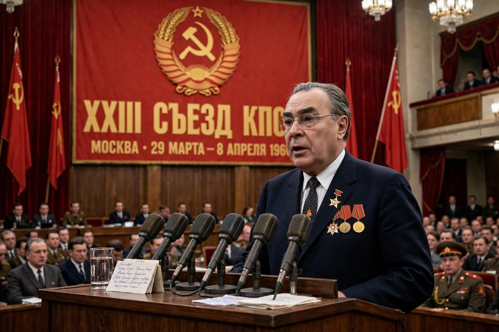

| Brezhnev Doctrine | |
|---|---|
 Leonid Brezhnev, Soviet leader 1964–1982 | |
| Announced | 1968, after the invasion of Czechoslovakia |
| Named for | Leonid Brezhnev |
| Content | Limited sovereignty of socialist states; right of intervention to defend socialism |
| Abandoned | 1989 ("Sinatra Doctrine" under Gorbachev) |
The Brezhnev Doctrine was a Soviet foreign policy doctrine which held that the sovereignty of individual socialist states was limited by the interests of the socialist community as a whole, and that the USSR and its allies had the right — indeed the duty — to intervene, including militarily, when socialism was threatened in any member state. It was formulated in 1968 to justify the Warsaw Pact invasion that crushed the Prague Spring, and it governed Soviet conduct toward its bloc until repudiated by Mikhail Gorbachev in the late 1980s.
The doctrine was first articulated in a Pravda article of 26 September 1968, "Sovereignty and the International Obligations of Socialist Countries," by Sergei Kovalev, and expounded by Leonid Brezhnev himself at the Fifth Congress of the Polish United Workers' Party on 12 November 1968. Brezhnev argued that when forces hostile to socialism "try to turn the development of some socialist country towards capitalism," it becomes "a common problem and concern of all socialist countries." In practice the doctrine retroactively legitimated the 1968 invasion — and implied the same logic applied retroactively to Hungary in 1956.
The doctrine's shadow shaped events long after 1968. It discouraged reform experiments throughout Eastern Europe, licensed sustained Soviet pressure on Poland during the Solidarity crisis of 1980–81 (where the threat of invasion helped produce martial law instead), and was invoked by hardliners against any deviation from the Soviet model. It also supplied a rationale in Soviet thinking about defending friendly regimes beyond Europe, though the 1979 intervention in Afghanistan rested on different stated grounds. China and Romania condemned the doctrine; Albania left the Soviet orbit partly over it; Yugoslavia, outside the bloc, feared it as a threat.
Under Gorbachev's "new thinking," the doctrine eroded in practice: Moscow signaled it would not intervene to save unpopular regimes. In 1989 Foreign Ministry spokesman Gennadi Gerasimov joked that the Brezhnev Doctrine had been replaced by the "Sinatra Doctrine" — each country could do it "its way." The non-intervention of 1989 allowed the Revolutions of 1989 to sweep away the bloc the doctrine had been created to hold together, and Gorbachev and the Warsaw Pact states formally condemned the 1968 invasion that year.